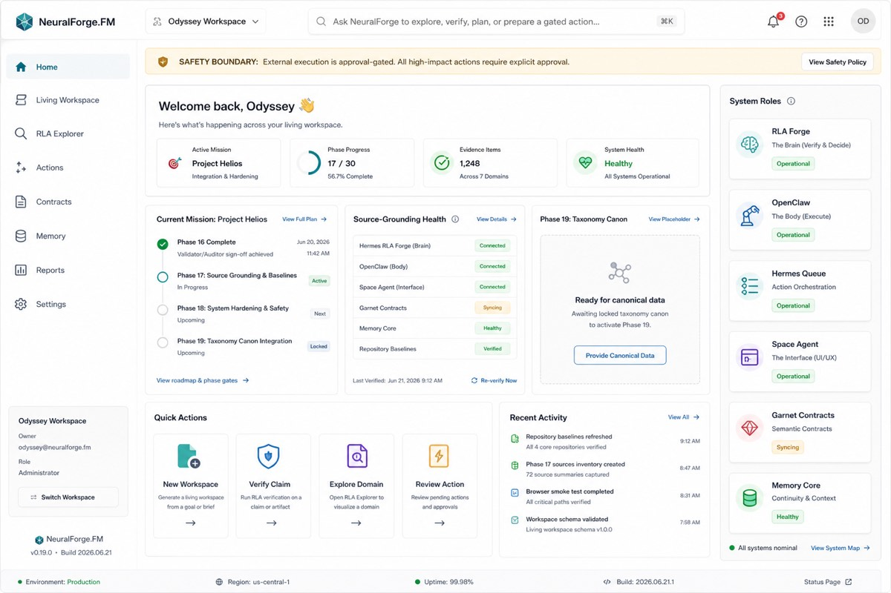
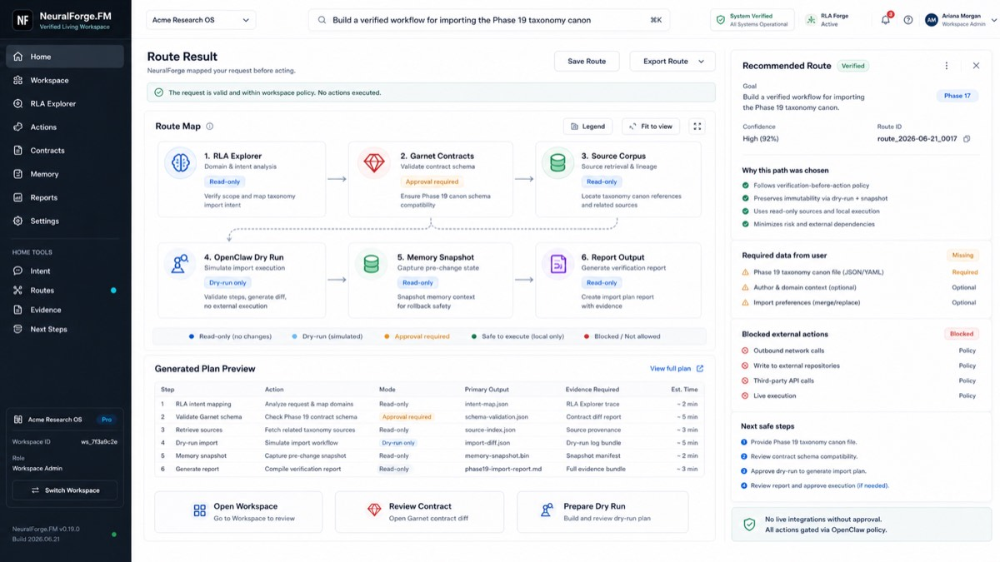
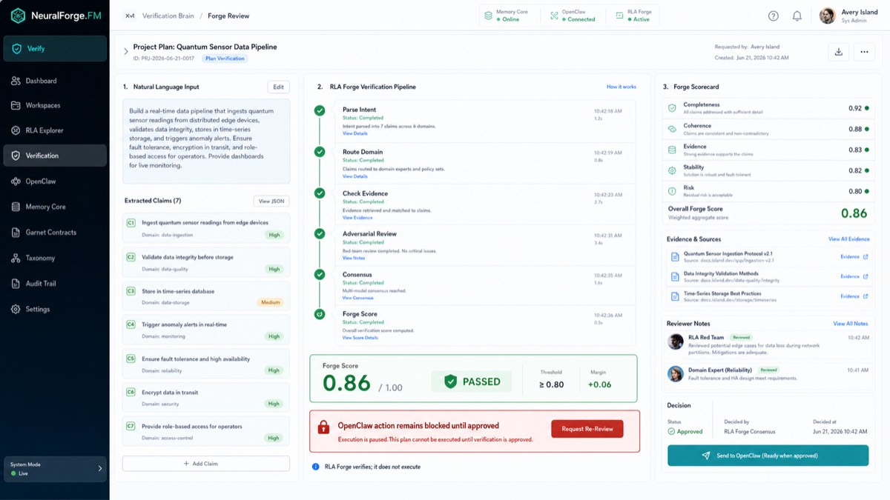
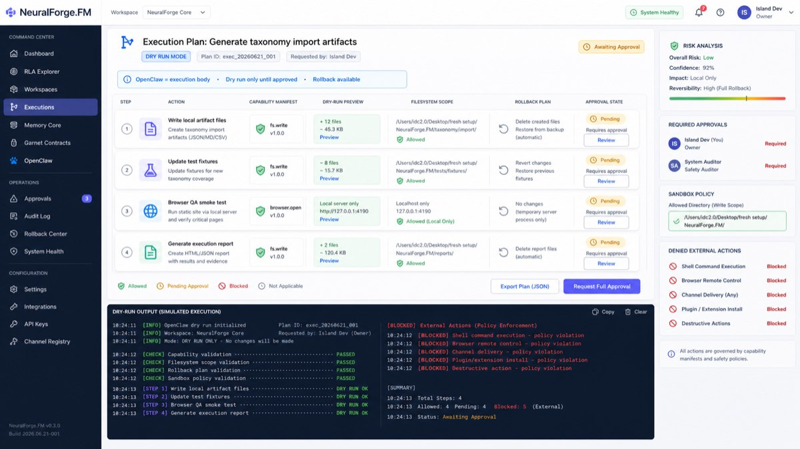
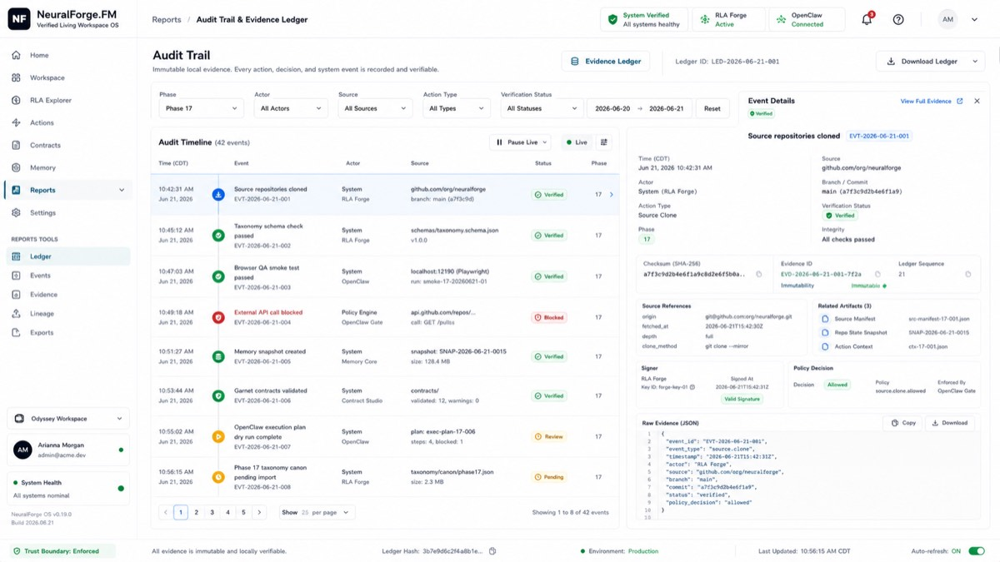

AI agents are powerful.
Nothing here executes on trust alone.
NeuralForge.FM is a Living Workspace OS — an AI workspace where every command is routed through a locked domain taxonomy, scored by a verification brain, gated behind explicit human approval, executed dry-run-first in an auditable sandbox, and recorded with rollback evidence.
Zero-dependency core · liveActionsExecuted: false by contract · every phase gated by tests, schemas & audit evidence

RLA verified · approval gate armed · rollback available2026's agents act first and apologize later
Frontier coding agents got shockingly capable — and teams got a new class of incident: unreviewed actions, deleted data, invisible decisions, no evidence trail. Capability outran governance.
Actions without verification
Agents execute the moment they're confident — not the moment they're right. There's no scoring gate between "the model believes it" and "it happened."
"It ran the migration before anyone looked at it."
Decisions you can't inspect
Why did the agent choose that approach? Which evidence did it weigh? After the fact, there's usually no trace — just a diff and a vibe.
"The audit asked for evidence. We had chat logs."
No undo for autonomy
Rollback is an afterthought. When an autonomous run goes sideways, recovery is manual archaeology instead of a recorded, reversible plan.
"We spent the weekend reconstructing what it changed."
Ask → Route → Verify → Gate → Dry-run → Audit
One natural-language command flows through six governed stages. Every stage produces evidence. Execution is blocked until verification passes and a human approves.
Command bar
You say what you want in plain language, from one workspace surface.
Domain taxonomy
The command maps into a locked, versioned 100-domain canon with confidence and evidence refs.
Forge Score
The verification brain extracts claims, weighs evidence, runs adversarial checks, and scores the plan.
🧠Human approval
External actions require approval. Destructive actions default to deny. Always.
🛡️Sandboxed execution
Dry-run first, capability manifests, local sandbox, rollback plan recorded before anything moves.
🧰Evidence ledger
Every decision, score, approval, and artifact lands in a read-only session record.
📜Five subsystems, fixed roles, hard boundaries
Each layer does one job and is contractually forbidden from doing the others'. The verifier never executes. The executor never self-approves. Learning never activates without review.
RLA Forge
Claim extraction, domain routing, evidence review, adversarial debate, consensus — condensed into a weighted Forge Score that must pass before execution is even considered.
OpenClaw
Always dry-run first. Capability manifests declare exactly what an action may touch; approval policy gates it; a local sandbox contains it; rollback evidence precedes it.
Garnet
Domain, action, memory, UI, sandbox, and permission contracts made visible — with diff review and validation diagnostics, so change is never silent.
Hermes
Workflow traces become proposed skills — inactive until tests, provenance, risk, and rollback are reviewed by a human. The system improves, on the record.
Memory Core
Working, episodic, semantic, and procedural memory lanes with explicit visibility controls, snapshots, retention policy, and gated restore — continuity without a black box.
A workspace where safety state is always on screen
Sixty reference screens define the full surface. Verification status, approval gates, and rollback availability are visible on every one of them — by rule, not by accident.




Invariants, not settings
These aren't toggles a future update can quietly flip. They're contracts enforced by schemas, tests, and CI gates in the codebase itself.
Verification before action. No execution path exists that skips the Forge Score gate.
Dry-run first. Every action plan renders its effects before any effect occurs.
Destructive defaults to deny. External actions require approval; destructive ones are blocked outright.
Rollback is evidence. A recovery plan is recorded before execution, not improvised after.
Fail closed. Invalid manifests, unknown routes, unverified claims — everything degrades to blocked, flagged, reviewable.
Audit everything. Sessions are read-only artifacts; no silent mutation, ever.
Agent power, minus agent chaos
Teams burned by autonomy
You want agents doing real work — but the last incident taught you that "just trust it" is not a control plane. NeuralForge makes approval and rollback the default physics.
Regulated & audited environments
When someone asks "what did the AI do and why," you need an evidence ledger, not a scroll through chat history. Every session is an exportable, read-only record.
Builders of governed agents
Capability manifests, approval policies, verification scoring, and contract schemas — reference architecture you can study, fork, and hold your own agents to.
See the whole loop run —
with zero live actions enabled
The MVP demonstrates ask → route → verify → gate → dry-run → audit end-to-end as a self-contained workspace. Open it, type a command, watch it get verified and gated.